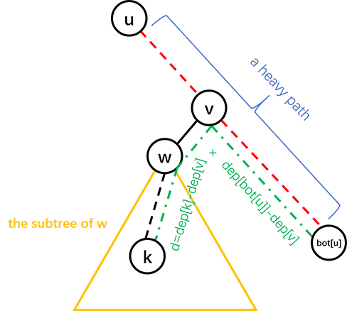

author: Ir1d, TrisolarisHD, ouuan, hsfzLZH1, Xeonacid, greyqz, Chrogeek, ftxj, sshwy, LuoshuiTianyi, hyp1231
树链剖分的思想及能解决的问题
树链剖分用于将树分割成若干条链的形式，以维护树上路径的信息。
具体来说，将整棵树剖分为若干条链，使它组合成线性结构，然后用其他的数据结构维护信息。
树链剖分 （树剖/链剖）有多种形式，如 重链剖分 ， 长链剖分 和用于 Link/cut Tree 的剖分（有时被称作“实链剖分”），大多数情况下（没有特别说明时），“树链剖分”都指“重链剖分”，本文所讲的也是“重链剖分”。
重链剖分可以将树上的任意一条路径划分成不超过 $O(\log n)$ 条连续的链，每条链上的点深度互不相同（即是自底向上的一条链，链上所有点的 LCA 为链的一个端点）。
重链剖分还能保证划分出的每条链上的节点 DFS 序连续，因此可以方便地用一些维护序列的数据结构（如线段树）来维护树上路径的信息。
如：
- 修改 树上两点之间的路径上 所有点的值。
- 查询 树上两点之间的路径上 节点权值的 和/极值/其它（在序列上可以用数据结构维护，便于合并的信息） 。
除了配合数据结构来维护树上路径信息，树剖还可以用来 $O(\log n)$ （且常数较小）地求 LCA。在某些题目中，还可以利用其性质来灵活地运用树剖。
重链剖分
我们给出一些定义：
定义 重子节点 表示其子节点中子树最大的子结点。如果有相同的，任意取。如果没有子节点，就没有。
定义 轻子节点 表示剩余的子结点。
从这个结点到重子节点的边叫 重边 。
到其他轻子节点的边叫 轻边 。
若干条首尾衔接的重边构成 重链 。
把落单的结点也当作重链，那么整棵树就被剖分成若干条重链。
看一张图就明白了

实现
树剖的实现分两个 DFS 的过程。伪代码如下：
第一个 DFS 记录每个结点的父节点（father）、深度（deep）、子树大小（size）、重子节点（hson）。
$$ \begin{array}{l} \text{TREE-BUILD }(u,dep) \ \begin{array}{ll} 1 & u.hson\gets 0 \ 2 & u.hson.size\gets 0 \ 3 & u.deep\gets dep \ 4 & u.size\gets 1 \ 5 & \textbf{for }\text{each }u\text{'s son }v \ 6 & \qquad u.size\gets u.size + \text{TREE-BUILD }(v,dep+1) \ 7 & \qquad v.father\gets u \ 8 & \qquad \textbf{if }v.size> u.hson.size \ 9 & \qquad \qquad u.hson\gets v \ 10 & \textbf{return } u.size \end{array} \end{array}
$$
第二个 DFS 记录所在链的链顶（top，应初始化为结点本身）、重边优先遍历时的 DFS 序（dfn）、DFS 序对应的节点编号（rank）。
$$ \begin{array}{l} \text{TREE-DECOMPOSITION }(u,top) \ \begin{array}{ll} 1 & u.top\gets top \ 2 & tot\gets tot+1\ 3 & u.dfn\gets tot \ 4 & rank(tot)\gets u \ 5 & \textbf{if }u.hson\text{ is not }0 \ 6 & \qquad \text{TREE-DECOMPOSITION }(u.hson,top) \ 7 & \qquad \textbf{for }\text{each }u\text{'s son }v \ 8 & \qquad \qquad \textbf{if }v\text{ is not }u.hson \ 9 & \qquad \qquad \qquad \text{TREE-DECOMPOSITION }(v,v) \end{array} \end{array}
$$
给一个具体的代码实现吧。
我们先给出一些定义：
- $fa(x)$ 表示节点 $x$ 在树上的父亲。
- $dep(x)$ 表示节点 $x$ 在树上的深度。
- $siz(x)$ 表示节点 $x$ 的子树的节点个数。
- $son(x)$ 表示节点 $x$ 的 重儿子 。
- $top(x)$ 表示节点 $x$ 所在 重链 的顶部节点（深度最小）。
- $dfn(x)$ 表示节点 $x$ 的 DFS 序 ，也是其在线段树中的编号。
- $rnk(x)$ 表示 DFS 序所对应的节点编号，有 $rnk(dfn(x))=x$ 。
我们进行两遍 DFS 预处理出这些值，其中第一次 DFS 求出 $fa(x)$ , $dep(x)$ , $siz(x)$ , $son(x)$ ，第二次 DFS 求出 $top(x)$ , $dfn(x)$ , $rnk(x)$ 。
给出一种代码实现：
void dfs1(int o) {
son[o] = -1;
siz[o] = 1;
for (int j = h[o]; j; j = nxt[j])
if (!dep[p[j]]) {
dep[p[j]] = dep[o] + 1;
fa[p[j]] = o;
dfs1(p[j]);
siz[o] += siz[p[j]];
if (son[o] == -1 || siz[p[j]] > siz[son[o]]) son[o] = p[j];
}
}
void dfs2(int o, int t) {
top[o] = t;
cnt++;
dfn[o] = cnt;
rnk[cnt] = o;
if (son[o] == -1) return;
dfs2(son[o], t); // 优先对重儿子进行 DFS，可以保证同一条重链上的点 DFS 序连续
for (int j = h[o]; j; j = nxt[j])
if (p[j] != son[o] && p[j] != fa[o]) dfs2(p[j], p[j]);
}
重链剖分的性质
树上每个节点都属于且仅属于一条重链。
由于每个点最多有一个重儿子，重边一定会连成链状结构，而不会连成一棵树。
在剖分时 优先遍历重儿子 ，最后重链的 DFS 序就会是连续的。
可以发现，当我们向下经过一条 轻边 时，所在子树的大小至少会除以二。所以，从一个点出发向子树内走最多经过 $O(\log n)$ 条轻边，也就是最多经过 $O(\log n)$ 条重链。
对于树上的任意一条路径，把它拆分成从两个端点的 LCA 分别向两边往下走，分别最多经过 $O(\log n)$ 条重链，因此，树上的每条路径都可以被拆分成不超过 $O(\log n)$ 条重链。
常见应用
路径上维护
用树链剖分求树上两点路径权值和，伪代码如下：
$$ \begin{array}{l} \text{TREE-PATH-SUM }(u,v) \ \begin{array}{ll} 1 & tot\gets 0 \ 2 & \textbf{while }u.top\text{ is not }v.top \ 3 & \qquad \textbf{if }u.top.deep< v.top.deep \ 4 & \qquad \qquad \text{SWAP}(u, v) \ 5 & \qquad tot\gets tot + \text{sum of values between }u\text{ and }u.top \ 6 & \qquad u\gets u.top.father \ 7 & tot\gets tot + \text{sum of values between }u\text{ and }v \ 8 & \textbf{return } tot \end{array} \end{array}
$$
链上的 DFS 序是连续的，可以使用线段树、树状数组维护。
每次选择深度较大的链往上跳，直到两点在同一条链上。
同样的跳链结构适用于维护、统计路径上的其他信息。
子树维护
有时会要求维护子树上的信息，譬如将以 $x$ 为根的子树的所有结点的权值增加 $v$ 。
在 DFS 搜索的时候，子树中的结点的 DFS 序是连续的。
每一个结点记录 bottom 表示所在子树连续区间末端的结点。
这样就把子树信息转化为连续的一段区间信息。
求最近公共祖先
不断向上跳重链，当跳到同一条重链上时，深度较小的结点即为 LCA。
向上跳重链时需要先跳所在重链顶端深度较大的那个。
参考代码：
int lca(int u, int v) {
while (top[u] != top[v]) {
if (dep[top[u]] > dep[top[v]])
u = fa[top[u]];
else
v = fa[top[v]];
}
return dep[u] > dep[v] ? v : u;
}
例题
「ZJOI2008」树的统计
题目大意
对一棵有 $n$ 个节点，节点带权值的静态树，进行三种操作共 $q$ 次：
- 修改单个节点的权值；
- 查询 $u$ 到 $v$ 的路径上的最大权值；
- 查询 $u$ 到 $v$ 的路径上的权值之和。
保证 $1\le n\le 30000$ , $0\le q\le 200000$ 。
解法
根据题面以及以上的性质，你的线段树需要维护三种操作：
- 单点修改；
- 区间查询最大值；
- 区间查询和。
单点修改很容易实现。
由于子树的 DFS 序连续（无论是否树剖都是如此），修改一个节点的子树只用修改这一段连续的 DFS 序区间。
问题是如何修改/查询两个节点之间的路径。
考虑我们是如何用 倍增法求解 LCA 的。首先我们 将两个节点提到同一高度，然后将两个节点一起向上跳 。对于树链剖分也可以使用这样的思想。
在向上跳的过程中，如果当前节点在重链上，向上跳到重链顶端，如果当前节点不在重链上，向上跳一个节点。如此直到两节点相同。沿途更新/查询区间信息。
对于每个询问，最多经过 $O(\log n)$ 条重链，每条重链上线段树的复杂度为 $O(\log n)$ ，因此总时间复杂度为 $O(n\log n+q\log^2 n)$ 。实际上重链个数很难达到 $O(\log n)$ （可以用完全二叉树卡满），所以树剖在一般情况下常数较小。
给出一种代码实现：
// st 是线段树结构体
int querymax(int x, int y) {
int ret = -inf, fx = top[x], fy = top[y];
while (fx != fy) {
if (dep[fx] >= dep[fy])
ret = max(ret, st.query1(1, 1, n, dfn[fx], dfn[x])), x = fa[fx];
else
ret = max(ret, st.query1(1, 1, n, dfn[fy], dfn[y])), y = fa[fy];
fx = top[x];
fy = top[y];
}
if (x != y) {
if (dfn[x] < dfn[y])
ret = max(ret, st.query1(1, 1, n, dfn[x], dfn[y]));
else
ret = max(ret, st.query1(1, 1, n, dfn[y], dfn[x]));
} else
ret = max(ret, st.query1(1, 1, n, dfn[x], dfn[y]));
return ret;
}
??? "参考代码"
```cpp
#include <algorithm>
#include <cstdio>
#include <cstring>
#define lc o << 1
#define rc o << 1 | 1
const int maxn = 60010;
const int inf = 2e9;
int n, a, b, w[maxn], q, u, v;
int cur, h[maxn], nxt[maxn], p[maxn];
int siz[maxn], top[maxn], son[maxn], dep[maxn], fa[maxn], dfn[maxn], rnk[maxn],
cnt;
char op[10];
inline void add_edge(int x, int y) {
cur++;
nxt[cur] = h[x];
h[x] = cur;
p[cur] = y;
}
struct SegTree {
int sum[maxn * 4], maxx[maxn * 4];
void build(int o, int l, int r) {
if (l == r) {
sum[o] = maxx[o] = w[rnk[l]];
return;
}
int mid = (l + r) >> 1;
build(lc, l, mid);
build(rc, mid + 1, r);
sum[o] = sum[lc] + sum[rc];
maxx[o] = std::max(maxx[lc], maxx[rc]);
}
int query1(int o, int l, int r, int ql, int qr) // max
{
if (l > qr || r < ql) return -inf;
if (ql <= l && r <= qr) return maxx[o];
int mid = (l + r) >> 1;
return std::max(query1(lc, l, mid, ql, qr), query1(rc, mid + 1, r, ql, qr));
}
int query2(int o, int l, int r, int ql, int qr) // sum
{
if (l > qr || r < ql) return 0;
if (ql <= l && r <= qr) return sum[o];
int mid = (l + r) >> 1;
return query2(lc, l, mid, ql, qr) + query2(rc, mid + 1, r, ql, qr);
}
void update(int o, int l, int r, int x, int t) {
if (l == r) {
maxx[o] = sum[o] = t;
return;
}
int mid = (l + r) >> 1;
if (x <= mid)
update(lc, l, mid, x, t);
else
update(rc, mid + 1, r, x, t);
sum[o] = sum[lc] + sum[rc];
maxx[o] = std::max(maxx[lc], maxx[rc]);
}
} st;
void dfs1(int o) {
son[o] = -1;
siz[o] = 1;
for (int j = h[o]; j; j = nxt[j])
if (!dep[p[j]]) {
dep[p[j]] = dep[o] + 1;
fa[p[j]] = o;
dfs1(p[j]);
siz[o] += siz[p[j]];
if (son[o] == -1 || siz[p[j]] > siz[son[o]]) son[o] = p[j];
}
}
void dfs2(int o, int t) {
top[o] = t;
cnt++;
dfn[o] = cnt;
rnk[cnt] = o;
if (son[o] == -1) return;
dfs2(son[o], t);
for (int j = h[o]; j; j = nxt[j])
if (p[j] != son[o] && p[j] != fa[o]) dfs2(p[j], p[j]);
}
int querymax(int x, int y) {
int ret = -inf, fx = top[x], fy = top[y];
while (fx != fy) {
if (dep[fx] >= dep[fy])
ret = std::max(ret, st.query1(1, 1, n, dfn[fx], dfn[x])), x = fa[fx];
else
ret = std::max(ret, st.query1(1, 1, n, dfn[fy], dfn[y])), y = fa[fy];
fx = top[x];
fy = top[y];
}
if (x != y) {
if (dfn[x] < dfn[y])
ret = std::max(ret, st.query1(1, 1, n, dfn[x], dfn[y]));
else
ret = std::max(ret, st.query1(1, 1, n, dfn[y], dfn[x]));
} else
ret = std::max(ret, st.query1(1, 1, n, dfn[x], dfn[y]));
return ret;
}
int querysum(int x, int y) {
int ret = 0, fx = top[x], fy = top[y];
while (fx != fy) {
if (dep[fx] >= dep[fy])
ret += st.query2(1, 1, n, dfn[fx], dfn[x]), x = fa[fx];
else
ret += st.query2(1, 1, n, dfn[fy], dfn[y]), y = fa[fy];
fx = top[x];
fy = top[y];
}
if (x != y) {
if (dfn[x] < dfn[y])
ret += st.query2(1, 1, n, dfn[x], dfn[y]);
else
ret += st.query2(1, 1, n, dfn[y], dfn[x]);
} else
ret += st.query2(1, 1, n, dfn[x], dfn[y]);
return ret;
}
int main() {
scanf("%d", &n);
for (int i = 1; i < n; i++)
scanf("%d%d", &a, &b), add_edge(a, b), add_edge(b, a);
for (int i = 1; i <= n; i++) scanf("%d", w + i);
dep[1] = 1;
dfs1(1, -1);
dfs2(1, 1);
st.build(1, 1, n);
scanf("%d", &q);
while (q--) {
scanf("%s%d%d", op, &u, &v);
if (!strcmp(op, "CHANGE")) st.update(1, 1, n, dfn[u], v);
if (!strcmp(op, "QMAX")) printf("%d\n", querymax(u, v));
if (!strcmp(op, "QSUM")) printf("%d\n", querysum(u, v));
}
return 0;
}
```
Nauuo and Binary Tree
这是一道交互题，也是树剖的非传统应用。
题目大意
有一棵以 $1$ 为根的二叉树，你可以询问任意两点之间的距离，求出每个点的父亲。
节点数不超过 $3000$ ，你最多可以进行 $30000$ 次询问。
解法
首先可以通过 $n-1$ 次询问确定每个节点的深度。
然后考虑按深度从小到大确定每个节点的父亲，这样的话确定一个节点的父亲时其所有祖先一定都是已知的。
确定一个节点的父亲之前，先对树已知的部分进行重链剖分。
假设我们需要在子树 $u$ 中找节点 $k$ 所在的位置，我们可以询问 $k$ 与 $u$ 所在重链的尾端的距离，就可以进一步确定 $k$ 的位置，具体见图：

其中红色虚线是一条重链， $d$ 是询问的结果即 $dis(k, bot[u])$ ， $v$ 的深度为 $(dep[k]+dep[bot[u]]-d)/2$ 。
这样的话，如果 $v$ 只有一个儿子， $k$ 的父亲就是 $v$ ，否则可以递归地在 $w$ 的子树中找 $k$ 的父亲。
时间复杂度 $O(n^2)$ ，询问复杂度 $O(n\log n)$ 。
具体地，设 $T(n)$ 为最坏情况下在一棵大小为 $n$ 的树中找到一个新节点的位置所需的询问次数，可以得到：
$$ T(n)\le \begin{cases} 0&n=1\ T\left(\left\lfloor\frac{n-1}2\right\rfloor\right)+1&n\ge2 \end{cases}
$$
$2999+\sum_{i=1}^{2999}T(i)\le 29940$ ，事实上这个上界是可以通过构造数据达到的，然而只要进行一些随机扰动（如对深度进行排序时使用不稳定的排序算法），询问次数很难超过 $21000$ 次。
??? note "参考代码"
```cpp
#include <algorithm>
#include <cstdio>
#include <iostream>
using namespace std;
const int N = 3010;
int n, fa[N], ch[N][2], dep[N], siz[N], son[N], bot[N], id[N];
int query(int u, int v) {
printf("? %d %d\n", u, v);
fflush(stdout);
int d;
scanf("%d", &d);
return d;
}
void setFather(int u, int v) {
fa[v] = u;
if (ch[u][0])
ch[u][1] = v;
else
ch[u][0] = v;
}
void dfs(int u) {
if (ch[u][0]) dfs(ch[u][0]);
if (ch[u][1]) dfs(ch[u][1]);
siz[u] = siz[ch[u][0]] + siz[ch[u][1]] + 1;
if (ch[u][1])
son[u] = int(siz[ch[u][0]] < siz[ch[u][1]]);
else
son[u] = 0;
if (ch[u][son[u]])
bot[u] = bot[ch[u][son[u]]];
else
bot[u] = u;
}
void solve(int u, int k) {
if (!ch[u][0]) {
setFather(u, k);
return;
}
int d = query(k, bot[u]);
int v = bot[u];
while (dep[v] > (dep[k] + dep[bot[u]] - d) / 2) v = fa[v];
int w = ch[v][son[v] ^ 1];
if (w)
solve(w, k);
else
setFather(v, k);
}
int main() {
int i;
scanf("%d", &n);
for (i = 2; i <= n; ++i) {
id[i] = i;
dep[i] = query(1, i);
}
sort(id + 2, id + n + 1, [](int x, int y) { return dep[x] < dep[y]; });
for (i = 2; i <= n; ++i) {
dfs(1);
solve(1, id[i]);
}
printf("!");
for (i = 2; i <= n; ++i) printf(" %d", fa[i]);
printf("\n");
fflush(stdout);
return 0;
}
```
练习
「luogu P3379」【模板】最近公共祖先（LCA） （树剖求 LCA 无需数据结构，可以用作练习）
「JLOI2014」松鼠的新家 （当然也可以用树上差分）